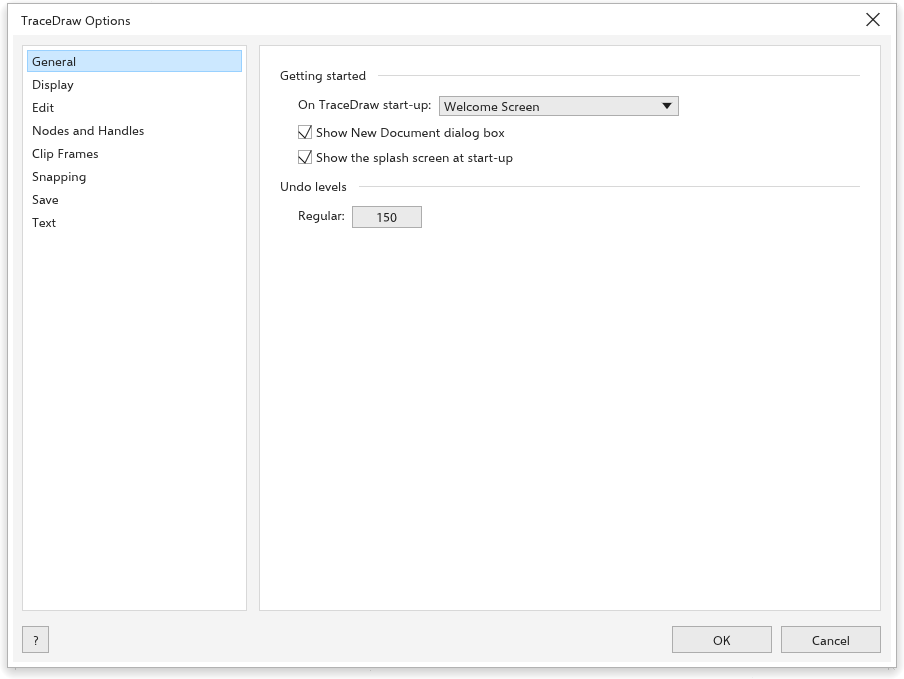
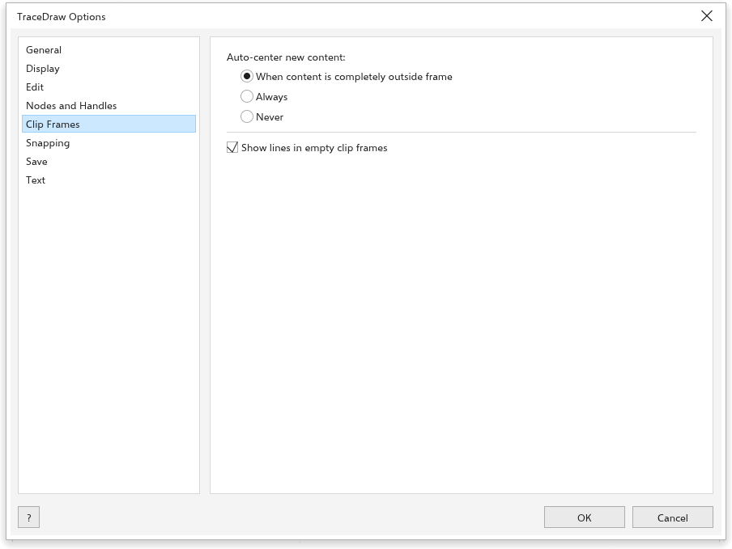
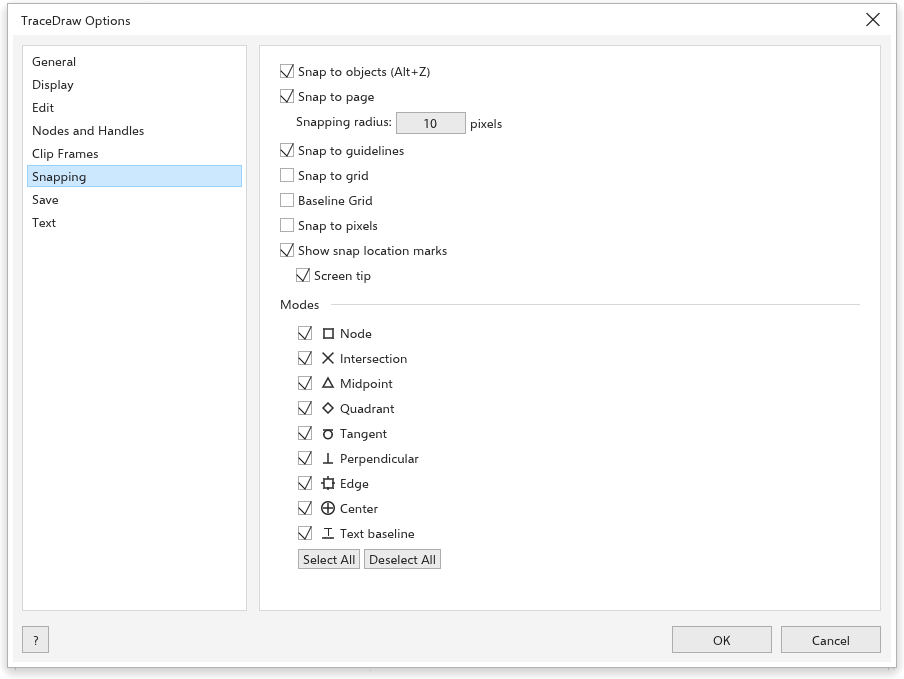

Opsi TraceDraw
Alat > Opsi > TraceDraw (Ctrl+J) mengatur cara kerja program. Pilih halaman dari daftar di sebelah kiri.
Umum

- Saat {app} dimulai: tampilkan Layar Sambutan, mulai dokumen baru, atau buka dokumen yang terakhir disunting.
- Tampilkan kotak dialog Dokumen Baru (aktif): menanyakan pengaturan gambar baru; lihat Membuat gambar.
- Tampilkan layar pembuka saat memulai (aktif).
- Use hardware acceleration (aktif): jendela digambar dengan kartu grafis yang dipilih di sebelahnya (Fastest available pada awalnya); nonaktif, dengan perender perangkat lunak komputer. Berlaku pada mulai berikutnya. Jika jendela tidak bisa terbuka dengan cara itu, TraceDraw mulai lagi dengan perender perangkat lunak, lalu dengan OpenGL, dan mengingat yang berhasil.
- Tingkat urungkan: berapa langkah yang dapat Anda urungkan (awalnya 150).
Tampilan

- Warna Pruf: tampilkan warna seperti saat dicetak.
- Tampilkan tooltip (aktif), Sembunyikan kotak pembatas untuk alat kurva, dan Aktifkan pelacakan simpul (nonaktif: bila aktif, alat Pilih dapat menyeret simpul kurva yang dipilih).
- Pratinjau layar penuh: Tampilkan batas halaman.
- Tindakan default roda mouse: Zoom (bawaan) atau Gulir.
- View when a drawing opens: Fit to page (bawaan), Fit to objects, Page width, Page height, 100% (real size) atau As saved (halaman, posisi, dan zoom yang disimpan setiap kali berkas TraceDraw disimpan).
- Kalibrasi penggaris: tempelkan penggaris ke layar dan ubah Resolusi layar sampai tandanya cocok, agar zum 100% menampilkan ukuran sebenarnya. Atur ulang mengembalikan nilai 96.
Sunting

- Sudut batasan: kelipatan sudut Ctrl saat memutar dan menggambar (awalnya 15 derajat).
- Presisi gambar: jumlah angka desimal di bilah properti dan bilah status (awalnya 3).
- Visibility of inactive objects (awalnya 20%) dan Double-click to activate focus mode; lihat Mode fokus.
Simpul dan Gagang

- Ukuran node: kecil, sedang, atau besar.
- Bentuk node untuk simpul Tajam, Halus, dan Simetris.
- Tampilkan arah kurva saat mengedit.
- Tampilkan cincin pembulat sudut pada node kurva (alat Bentuk).
- Warna: Warna utama simpul dan gagang yang dipilih serta Warna sekunder.
- Tampilkan node tak terpilih dengan isian (Ctrl+Shift+G).
Bingkai Potong

- Pusatkan konten baru secara otomatis: Saat konten seluruhnya di luar bingkai (bawaan), Selalu, atau Tidak pernah.
- Tampilkan garis di bingkai klip kosong (aktif).
Lihat Menempatkan objek di dalam bingkai.
Penempelan

- Tempel ke objek (Alt+Z), Tempel ke halaman, Kancing ke garis panduan, Kancing ke kisi, kisi garis dasar, dan Tempel ke piksel.
- Radius penempelan (awalnya 10 piksel).
- Tampilkan tanda lokasi kancing dan Tip layar.
- Mode: titik-titik tempat objek menempel, dengan Pilih Semua dan Batalkan Semua.
Lihat Penempelan.
Simpan

- Cadangan: Cadangkan file asli sebelum menyimpan (aktif) menyimpan berkas sebelumnya sebagai
backup_of_<name>, Cadangkan ke Folder yang sama dengan file asli atau tempat yang dipilih. - Cadangan otomatis (aktif): Cadangkan setiap 20 menit, ke folder sementara atau tempat yang dipilih. Setelah program mogok, cadangan akan ditawarkan; lihat Cadangan otomatis dan pemulihan.
Teks

Halaman ini punya lima tab.
- Tampilan: Kenaikan teks keyboard (seberapa banyak Ctrl+8 dan Ctrl+2 memperbesar dan memperkecil teks yang dipilih, 1 poin), Fon bawaan dan Ukuran bawaan untuk teks baru, serta Tampilkan Karakter Tak Tercetak.
- Text units pt, mm, cm, in, px…
- Paragraph Text: Tampilkan bingkai teks, Gunakan Pemenggalan Kata dan Hyphenation patterns (bawaan, atau kamus pemenggalan untuk bahasa Anda).
- Fon: Show recently used fonts di atas daftar font, Number of recently used fonts (5, hingga 20) dan Font sample size.
- Spelling: Abaikan kata dengan angka, Abaikan kata huruf kapital dan Add corrections to Autocorrect, agar kata yang Anda koreksi di pemeriksa ejaan dikoreksi saat mengetik berikutnya; serta Dictionaries yang dipakai, lihat Kamus.
- Koreksi Otomatis: apa yang dikoreksi saat mengetik; lihat Koreksi otomatis.